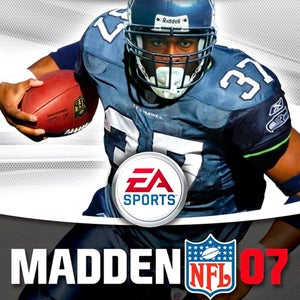
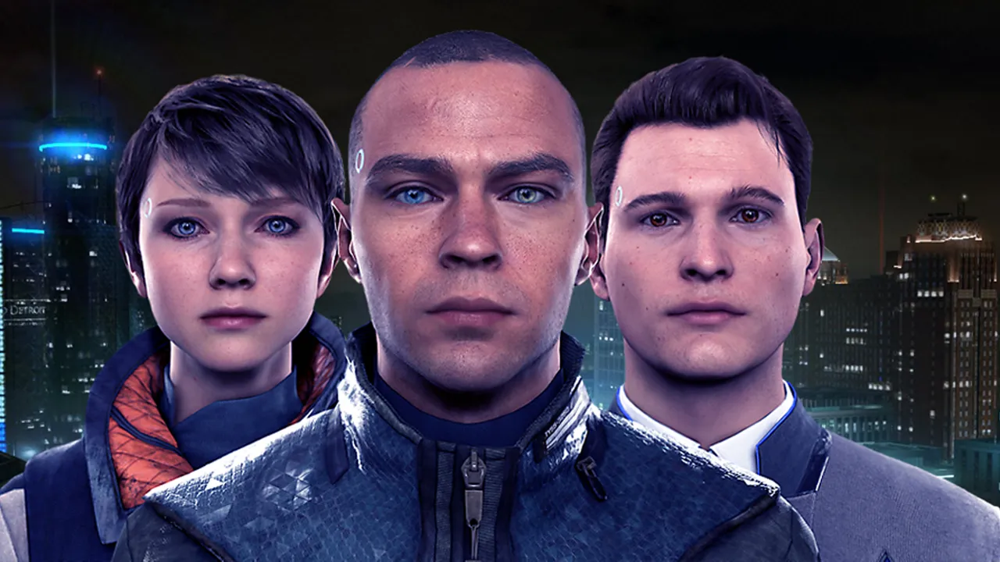

Tony Hawk's American Sk8Land
Platform: Game Boy Advance SP
This was one of the first games I ever played. Our parents got my siblings and me Game Boys and a couple of games to go with it, but Tony Hawk's was easily the best.
Image source: VGM Video Game Museum
NCAA and Madden
Platform: Original Xbox
My brother and I got an old Xbox from a family friend, along with both NCAA and Madden. I think they were the 2007 versions. The Xbox also had music from Sum 41 and The Offspring downloaded onto it, which got my brother and me into liking those bands.

Image source: IGN Madden NFL 07
The Last of Us
Platform: PlayStation 3
One Christmas, I got a new PS3, probably my favorite Christmas gift as a kid. "The Last of Us" came with the console, and it is still, in my opinion, the greatest game ever made. The storyline is more like a movie than just clips in a video game, and the action is engaging and gets difficult.
Detroit: Become Human
Platform: PlayStation 4
I played this recently and thought it was amazing. The way the storylines of the characters intertwine is great and unpredictable. I like how you can view the world's and your friends' decisions after each chapter and compare them to the choices you made.

Image source: Games Radar